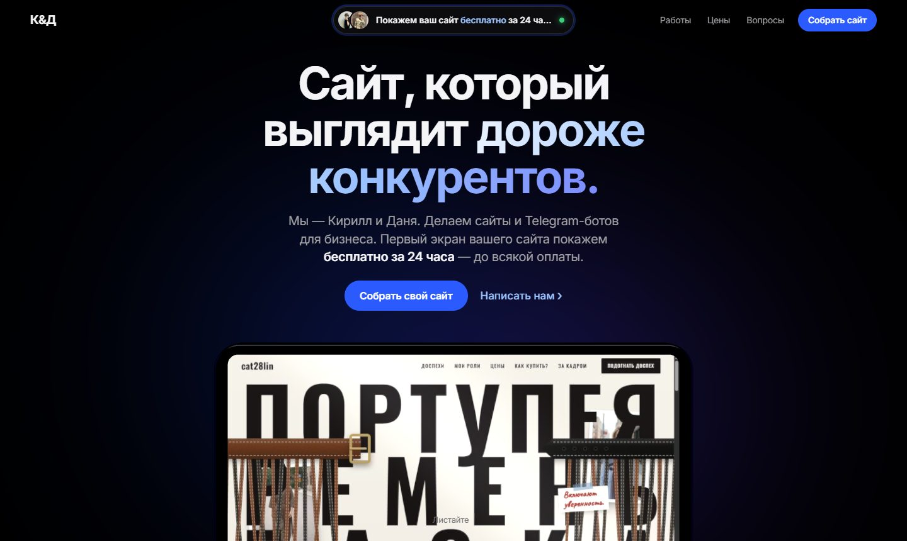
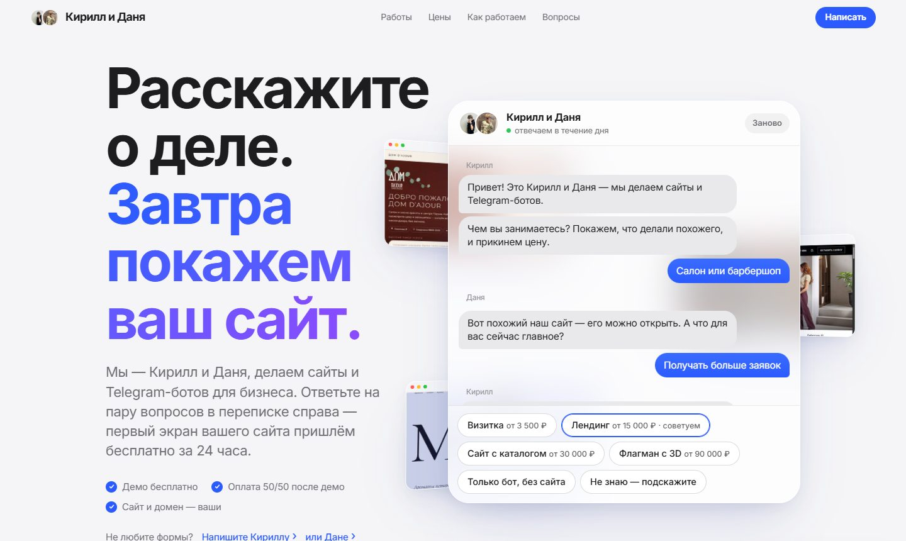

Два варианта нашего сайта
Откройте оба — лучше и с телефона, и с компьютера — и скажите, какой нравится больше.

«Остров» — тёмный3D-дисплей с живыми видео наших сайтов. Наверху «остров», как в iPhone: в нём заказ и чат. Сборка сайта как в магазине Apple.

«Разговор» — светлыйВся заявка — переписка с нами прямо на первом экране. Работы — 3D-пространство, сквозь которое летишь прокруткой.